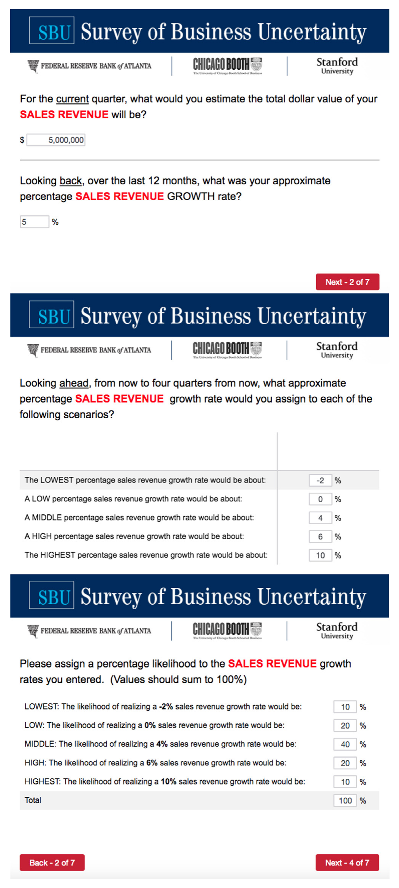
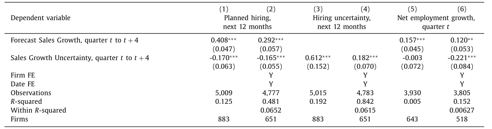
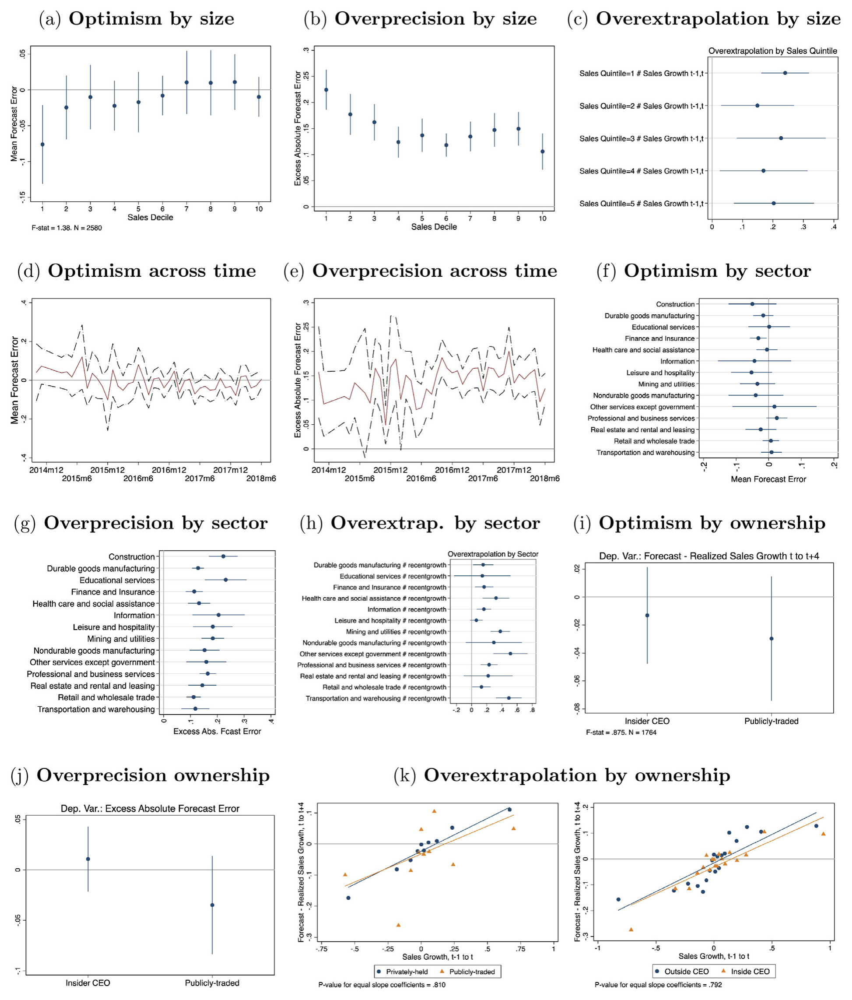
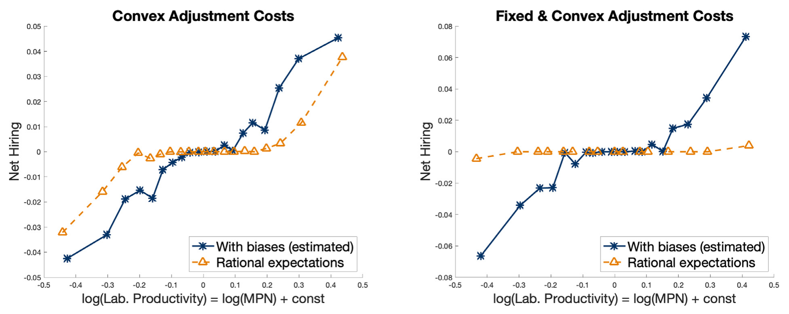
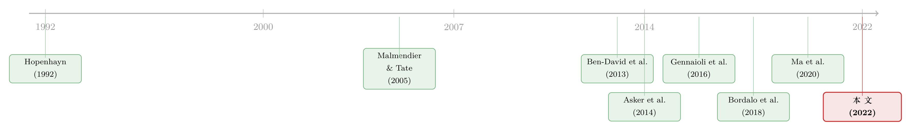

经理人的「过度自信」，其实藏在波动率里
本文读的是 Barrero (2022, Journal of Financial Economics)：用一份美国经理人月度调查，作者发现典型经理人并不「过度乐观」，但他们普遍低估了自家销售增长的波动率（过度精确），并高估了近期趋势的持续性（过度外推）。把这两种偏差放进一个含调整成本的异质性企业一般均衡模型里，它们让经理人对冲击「反应过度」、多花冤枉钱，吞掉典型企业 2.1%–6.8% 的价值，并把消费者福利压低 0.5%–2.3%。
1 一个被默认了几十年的假设
先讲一个尴尬的事实：在公司金融和宏观经济学里，「经理人是理性的」这条假设，被默默地用了几十年。
为什么是「默默地」？因为它太方便了。只要假定经理人的预期与企业面临的客观风险一致，模型就能闭合，比较静态就能算，福利就能评估。于是，在很长一段时间里，几乎没人认真去问一句：那些坐在 CEO、CFO 位置上的人，他们脑子里对未来的看法，到底准不准？
行为公司金融这一支后来撕开了一道口子。Malmendier and Tate (2005, 2008) 用高管行权时机这类间接信号，论证了有一些经理人是「过度自信 (overconfidence)」的——他们倾向于把自家公司看得过分美好，因此过度投资、爱并购。但请注意这里的措辞：是「有一些」。批评者总能反问一句：这会不会只是少数明星 CEO 的毛病？典型的、普通的那个经理人，真的也这样吗？而且——就算他真的有偏差，这点偏差在宏观层面上值多少钱？
这就是 Barrero (2022) 想回答的问题。他的野心不止于「再添一个经理人有偏差的证据」，而是要把两件事一次性做完：第一，直接量出典型经理人信念的偏差是哪一种、有多大；第二，把这种偏差塞进一个量化的动态一般均衡模型，算出它毁掉了多少企业价值、压低了多少社会福利。
2 三个事实：偏差不在「方向」，而在「形状」
作者的数据来自一份很特别的调查：亚特兰大联储 / 芝加哥布斯 / 斯坦福合办的 企业不确定性调查 (Survey of Business Uncertainty, SBU)。它每月通过邮件访问美国企业的高管（近 70% 是 CFO，其余多为 CEO 和 Owner），而且——这一点至关重要——它不只问「你预计明年销售增长多少」，还要求受访者给出一个五点主观概率分布：最低、低、中、高、最高五种情景，各自分配一个概率。

Figure 2: Sales growth questions in the Survey of Business Uncertainty as they have appeared since September 2016. In months prior to September 2016
为什么这个设计是关键？因为有了主观分布，作者不仅能拿到经理人的点预测（分布的均值），还能拿到他对自己预测有多大把握（分布的离散度，他用平均绝对离差来度量主观不确定性）。一句话：他能同时观测到经理人预期的「一阶矩」和「二阶矩」。把这两个矩分别与真实实现的销售增长去对账，三个事实就浮出水面了。
事实一：经理人并不过度乐观。 把所有企业、所有调查月份的预测误差（预测减实现）汇总起来，平均值几乎为零。预测误差的经验分布大体对称、围着零打转。这一点其实和 Bachmann and Elstner (2015)、Boutros et al. (2020) 在德国和美国数据里看到的一致。换句话说，传统意义上「经理人系统性高估自家前景」的故事，在典型经理人身上并不成立。
事实二：经理人过度精确（overprecision）。 偏差不在均值，而在方差。经理人系统性地低估了未来销售增长的波动率——他们以为自己预测得很准，实际上误差大得多。作者给出的数字非常直观：在给定的主观不确定性水平下，经理人实际犯下的绝对预测误差，比他们自以为会犯的，平均要大约 15 个百分点。这道「主观把握」与「客观误差」之间的垂直缝隙，就是过度精确的指纹。它呼应了 Ben-David et al. (2013) 的发现——美国经理人会低估标普 500 指数收益率的波动率。
事实三：经理人过度外推（overextrapolation）。 如果一家公司当季销售增长很猛，它的经理人对未来四个季度的预期就偏乐观；反过来，如果当季在萎缩，经理人就偏悲观。也就是说，他们高估了近期业务势头的持续性。这与预测文献里反复出现的发现一脉相承：La Porta (1996)、Bordalo et al. (2020) 在分析师身上看到外推，Rozsypal and Schlafmann (2017) 在家庭身上看到。
这三个事实合起来，传递了一个很微妙的信息：典型经理人的问题不在方向（他们没有系统性地吹牛），而在形状——他们把未来的概率分布画得太窄、又太「黏」在当下。这正是后面整篇文章要反复讲透的那一个核心。
「过度乐观」是均值偏差，「过度精确」是方差偏差，「过度外推」是持续性偏差。三者层层递进，对应着主观盈利过程的三个参数——这个对应关系，是全文从实证通向模型的桥。
3 信念真的会变成决策吗？
到这里，一个自然的问题是：就算经理人在问卷上写下的信念有偏差，谁说他们真的照着这些信念做决策？万一问卷只是随口一填呢？
作者用 SBU 里同时存在的「信念」和「行为」变量，正面回答了这个质疑。结论是：经理人在问卷里报出来的预期，既能预测真实结果，也能预测雇佣计划，还能预测当期的净招聘。
具体看表 1。把未来 12 个月的雇佣计划（即对就业增长的预期）对年度销售增长预测和不确定性做回归：销售增长预测的系数是 0.408***（原始面板），加入企业和时间固定效应后仍有 0.292***；而销售增长不确定性的系数是 -0.170***——预期越好，越想招人；越没把握，越不敢招。更进一步，销售不确定性还强烈预测就业的不确定性（系数 0.612***），说明经理人的二阶矩信念是内部自洽的。最后两列把因变量换成当期净招聘：销售增长预测系数 0.157***（原始）/0.120**（含固定效应），而不确定性在控制了企业和时间效应后预测更低的当期招聘（-0.221***）。

Table 1
这一步看似只是「验证数据」，但它在逻辑上举足轻重。它把「信念」和「行为」之间的实证关系，变成了后面结构模型必须命中的经验靶子——模型不能只解释经理人怎么想，还得解释经理人怎么做。（关于「嘴上的预期」与「手上的行为」未必一致这件事，可参见《嘴上说的预期，藏不住手上的外推》。）
4 这些偏差，是少数人的毛病吗？
接着要堵住开头那个最致命的质疑：会不会过度精确、过度外推只是某一类企业的特例？
作者把样本按规模、上市与否、CEO 是否大股东、是否属于大股东家族等维度切开，逐一检查。结论相当干净：过度精确普遍存在于小企业、大企业、上市、非上市公司；而那些理论上最该克制偏差的人——比如有最强动机去过度反应的经理人——身上的过度精确程度差不多，过度外推甚至略多一点。

Figure 5: Heterogeneity in optimism, overprecision, and overextrapolation. Figs. 5a–c compute the mean forecast error, excess absolute forecast error
这正是文章标题里「micro and macro」的底气所在：如果偏差只是个别明星 CEO 的脾气，那它的宏观含义就无足轻重；但偏差是弥漫性 (pervasive) 的，它就能从微观的个体决策，加总成宏观的资源错配。从 Malmendier and Tate「有些经理人有偏差」，到本文「典型经理人就有偏差」，这一步推进看似平淡，却是整个宏观叙事能立得住的地基。
5 模型：把一个波浪号写进贝尔曼方程
但真正关键的一步，是把这些事实量化。三个事实告诉我们偏差「是什么」，可它们值多少钱？这就需要一个结构模型。
作者搭的是一个异质性企业的动态一般均衡模型：每家企业面临自身特有的盈利冲击，经理人用一个主观盈利过程来预测未来盈利，并据此做前瞻性的雇佣决策，而改变雇佣规模要付出调整成本（adjustment costs）——招人要发布并填补空缺，裁人要承担遣散与劳资摩擦的代价（Davis et al., 2013; Krueger and Mas, 2004）。
这篇论文正文在此处被截断，下面给出的是与作者文字描述完全吻合的模型骨架（异质性企业 + 调整成本 + 主观期望算子），符号为通用记号而非逐字复制原文。核心思想——「客观过程与主观过程在三个参数上分道扬镳」——是作者明确写出的。
第一块积木：两套盈利过程。 设企业的对数盈利状态 \(z\) 服从一个客观的一阶自回归过程：
$$ z_{t+1} = \rho\, z_t + \sigma\, \varepsilon_{t+1}, \qquad \varepsilon_{t+1}\sim N(0,1) $$
而经理人脑子里用来做决策的，却是一套主观过程：
$$ z_{t+1} = (1-\tilde\rho)\,\tilde\mu + \tilde\rho\, z_t + \tilde\sigma\, \tilde\varepsilon_{t+1} $$
妙就妙在这三个带波浪号的参数，恰好一一对应第二节的三个事实：
- \(\tilde\mu\) 相对客观长期均值的偏离 ↔ 过度乐观（数据里 ≈ 无偏）；
- \(\tilde\rho > \rho\) ↔ 过度外推（高估持续性）；
- \(\tilde\sigma < \sigma\) ↔ 过度精确（低估波动率）。
第二块积木：带主观期望的贝尔曼方程。 经理人在每期选择雇佣量 \(n\) 来最大化企业价值，状态是当前盈利 \(z\) 和上期雇佣 \(n_{-1}\)：
整个故事的引擎，就是 \(a3\) 上那个波浪号 \(\tilde{\mathbb{E}}\)。理性预期模型里，这里应当是客观期望 \(\mathbb{E}\)；可一旦经理人以为冲击更持久（\(\tilde\rho\) 偏大）、波动更小（\(\tilde\sigma\) 偏小），他对延续价值 \(V(z',n')\) 的预期就会被系统性地扭曲。
于是反转出现了：因为相信「好（坏）日子会一直延续，而且很稳」，经理人会对眼下的盈利变动反应过度——盈利一涨就拼命招人、一跌就赶紧裁人，而每一次大幅调整都要支付高昂的调整成本。他比一个知道「冲击其实是短暂且多变」的理性经理人，更舍得为调整买单。结果就是：多余的波动、多余的调整支出、被白白烧掉的真实资源。 过度精确和过度外推，最终都通过「反应过度」这一条管道，转化成了企业价值的流失。
6 这些偏差，到底烧掉了多少钱？
作者用模拟矩方法 (simulated method of moments) 估计模型，同时瞄准三大类矩：经理人乐观/精确/外推的程度、信念与决策（及结果）之间的关系、销售与就业增长的联合动态。模型虽然高度过度识别，却能同时拟合一大堆有靶和无靶的特征——这本身就是贡献。
落到数字上：
- 微观：如果把一个有偏差的经理人换成理性预期的经理人，典型企业的价值会高出
2.1%到6.8%（视模型设定而定）。作个参照——Taylor (2010) 估计 CEO「占着位子不干活」的代价约为企业价值的3%。也就是说，信念偏差的代价，量级上不输于经典的代理问题。 - 宏观：因为偏差弥漫，个体的反应过度会加总成经济层面的过度波动与过度再配置。如果所有经理人都变理性，消费者福利会高出
0.5%到2.3%。再作个参照——Krusell et al. (2009) 把「消除整个经济周期」的福利收益估计为0.1%到1.5%。换句话说，治好经理人的信念偏差，可能比熨平商业周期还值钱。

Figure 7: Biases encourage overreaction and excessive reallocation. Each of the above figures shows binned scatter plots of log(labor productivity) on
如图 7 所示，偏差会推高劳动生产率的离散度——本该流向高效率企业的资源，被反应过度搅得来回乱窜。这正是把「信念」和「再配置摩擦」接到一起的地方，思路上承接了 Asker et al. (2014) 与 David and Venkateswaran (2019)。它也解释了为什么本文的结论比 Bachmann and Elstner (2015) 来得更强：后者在一个无摩擦模型里看经理人乐观，含义自然小；而一旦有了调整成本，经理人的每一次「想错了」都要真金白银地付账。
本文刻意把舞台设在「没有全经济冲击」的环境里，只看个体层面的反应过度。但作者明确暗示：一旦把这种弥漫性的过度反应放回有宏观冲击的世界，它很可能会放大资产价格和商业周期的波动——这与 Bordalo et al. (2021) 在信贷周期里讲的逻辑同源。
7 文献脉络
把这篇论文放回它生长的土壤里，会看得更清楚。
最早的一支，是异质性企业动态的传统：Hopenhayn (1992)、Hopenhayn and Rogerson (1993) 奠定了「企业带着自身冲击、在长期均衡里进进出出」的建模范式，本文的企业侧骨架就长在这上面。
接着，行为公司金融这一支开始质疑理性预期：Malmendier and Tate (2005) 用 CEO 过度自信解释过度投资，掀起了一波用高管特征和调查数据研究信念的浪潮——Graham et al. (2013)、Ben-David et al. (2013)（过度精确的直接证据）都在其中。

然后，预期与投资被正式接到一起：Gennaioli et al. (2016) 表明 CFO 的预期能解释投资，Bordalo et al. (2018) 把诊断性/外推性预期写成可估计的模型。再往后，Ma et al. (2020) 在一个含调整成本的模型里研究经理人预测的扭曲——但他们的经理人是反应不足的，因此推不出本文这种「过度再配置、过度调整支出」的结论。
本文所处的位置，就是这条脉络的交汇点：它把直接观测到的主观分布（而非间接信号或市场价格）当作信念的度量，把三种偏差结构化地嵌进一个带摩擦的一般均衡模型，从而一口气把微观代价和宏观福利都算了出来。（如果你更偏好「从价格里反推信念」而非「直接问问卷」的路线，可参见《想知道投资者信什么？去问价格，别问问卷》；而关于「过度反应」能否被某些机制驯服，可参见《三个臭皮匠，反而没那么容易上头？》。）
8 评论与延伸（Q&A + 研究方向）
(a) 几个可能的疑问
Q：「过度精确」和「过度自信」是一回事吗？
不是。日常说的「过度自信」往往指均值意义上的过度乐观，而本文恰恰否定了典型经理人过度乐观。过度精确是二阶矩意义上的：经理人对自己的点预测过分有把握，低估了未来的波动率。本文最反直觉的发现，就是把「自信」从均值偏差重新定位到了方差偏差上。
Q：怎么排除「经理人只是不会在问卷里表达不确定性」？
作者展示了主观不确定性与绝对预测误差之间存在正相关（图 1b）——经理人能够表达「我没把握」，而且表达得有信息量。问题在于，他们表达出的不确定性系统性地偏小，实际误差比主观预期大约
15个百分点。所以不是「不会表达」，而是「真心低估」。
Q：信念偏差和决策之间，会不会是反向因果——是计划招人才填了乐观的预期？
作者用企业和时间固定效应，把识别压到企业内的变动上（表 1 偶数列）。同一家企业、不同时点，预期高的月份雇佣计划更积极。固定效应吸收了「某些企业天生乐观又爱扩张」这类混淆。当然这仍是相关关系而非干净的外生冲击，但方向上很难用反向因果完全解释掉系数的稳健性。
Q：把福利损失算到 0.5%–2.3%，凭什么信这个量级？
关键在于它是结构估计出来的，依赖模型设定（调整成本形式、主观过程参数）。作者给的是一个区间而非点值，且用 Taylor (2010) 和 Krusell et al. (2009) 这两个独立基准做了「合理性校验」——量级落在熟悉的参照系内，不算离谱。但区间宽达四倍多，提醒我们这是「数量级正确」而非「精确到小数点」的结论。
Q：为什么本文结论比 Bachmann and Elstner (2015)、Ma et al. (2020) 都强？
两点。其一，本文有调整成本（摩擦），让每次错误的调整都付出真实代价，而 Bachmann-Elstner 用的是无摩擦模型，含义自然偏小。其二，本文的经理人是反应过度（高估持续性），而 Ma et al. 的经理人反应不足，后者推不出过度再配置和过度调整支出。识别出偏差的方向，直接决定了宏观含义的符号。
Q：SBU 样本偏大、偏老、偏周期性行业，会不会影响外部有效性？
会有影响，但作者做了两件事缓解：一是在就业加权口径下，样本对美国私营非农部门大体有代表性；二是按规模、上市与否、所有权结构切分，三种偏差都稳健存在。真正的代价更可能落在「小而年轻的企业」上——这部分在 SBU 里偏少，其偏差是否更大，仍是开放问题。
(b) 几个可能的研究问题与提案
1. 经理人信念偏差与公司债定价 / 信用利差。
【经济故事】如果过度精确让经理人低估自家现金流波动率，那么由经理人主导发行的债券，其隐含违约概率是否被系统性低估？过度外推则可能让企业在景气高点过度举债。债权人会不会「看穿」并要求补偿？这把行为公司金融直接接到了信用市场。 【可行性】中。需要把 SBU（或类似经理人调查）与企业层面的债券发行、利差数据匹配。难点在于经理人信念的样本与公开债发行人的交集可能有限，且识别需要一个能区分「客观风险」与「主观低估」的设计。
2. 外资持有人是否会矫正本土经理人的信念偏差？
【经济故事】外资机构投资者常被认为带来更强的治理与信息纪律。一个自然的猜想是：外资持股比例高的企业，其经理人的过度精确/过度外推是否更弱，或其决策的「反应过度」是否被抑制？这把本文的微观偏差与公司治理、外资持有人文献接了起来。 【可行性】中。需要经理人信念度量 + 持股结构面板，并用指数纳入等准外生的持股变动做识别。挑战在于经理人信念调查通常匿名，难与具体持股结构精确匹配。
3. 偏差的「流动性后果」：反应过度会不会传导到企业的现金与融资行为？
【经济故事】如果经理人高估盈利持续性，他可能在景气时低估对预防性现金的需求，导致流动性管理失当。把信念偏差接到企业现金持有、信贷额度动用上，能检验偏差是否不止毁掉「调整成本」，还放大了流动性风险。 【可行性】高。SBU 已有信念与雇佣，配 Compustat 的现金 / 短期债务即可做面板回归；识别仍依赖企业内变动 + 固定效应，与本文表 1 同构，doable。
4. 团队 vs 个人决策对偏差的调节。
【经济故事】本文是「单个经理人」的信念。但很多重大决策由团队或董事会做出。集体决策是放大还是抑制过度反应？这与《三个臭皮匠，反而没那么容易上头？》的问题直接对接。 【可行性】中。需要能区分「个人决策」与「团队决策」的企业层面信息（如治理结构、决策授权），并匹配信念调查。纯观测数据下识别偏弱，理想情形是实验或准实验设计。
我的判断
这篇论文最漂亮的地方，是它把「过度自信」从一个含糊的均值故事，精确地拆成了方差和持续性两个可度量的参数，再用一个结构模型把它们换算成美元和福利。从「有些 CEO 有毛病」到「典型经理人就有毛病、且这毛病值好几个点的福利」，叙事的推进是扎实的。
要担心的地方有两处。其一，识别终究是相关性 + 固定效应，没有真正外生的信念冲击；「信念驱动决策」与「某种第三因素同时驱动两者」之间，并未被一个干净的实验彻底切开。其二，宏观福利数字高度依赖模型设定——0.5%–2.3% 的区间宽到提醒我们，它回答的是「量级有多大」，而非「精确是多少」。
后续我最想看到的，是把这套主观信念过程接到信用市场和外资持有人上：如果过度精确真的让经理人低估了现金流波动率，那么最该为这种低估付出代价的，恰恰是债权人——而外资机构会不会成为那个把波浪号 \(\tilde{\mathbb{E}}\) 重新校准回 \(\mathbb{E}\) 的力量？这是一个既有经济故事、又有数据可做的方向。
参考文献
Asker, J., Collard-Wexler, A., & De Loecker, J. (2014). Dynamic inputs and resource (mis)allocation. Journal of Political Economy 122(5), 1013–1063.
Bachmann, R., & Elstner, S. (2015). Firm optimism and pessimism. European Economic Review 79, 297–325.
Barrero, J. M. (2022). The micro and macro of managerial beliefs. Journal of Financial Economics 143(2), 640–667.
Ben-David, I., Graham, J. R., & Harvey, C. R. (2013). Managerial miscalibration. Quarterly Journal of Economics 128(4), 1547–1584.
Bordalo, P., Gennaioli, N., & Shleifer, A. (2018). Diagnostic expectations and credit cycles. Journal of Finance 73(1), 199–227.
David, J. M., & Venkateswaran, V. (2019). The sources of capital misallocation. American Economic Review 109(7), 2531–2567.
Gennaioli, N., Ma, Y., & Shleifer, A. (2016). Expectations and investment. NBER Macroeconomics Annual 30(1), 379–431.
Graham, J. R., Harvey, C. R., & Puri, M. (2013). Managerial attitudes and corporate actions. Journal of Financial Economics 109(1), 103–121.
Hopenhayn, H. A. (1992). Entry, exit, and firm dynamics in long run equilibrium. Econometrica 60(5), 1127–1150.
Hopenhayn, H., & Rogerson, R. (1993). Job turnover and policy evaluation: A general equilibrium analysis. Journal of Political Economy 101(5), 915–938.
Krusell, P., Mukoyama, T., Şahin, A., & Smith Jr, A. A. (2009). Revisiting the welfare effects of eliminating business cycles. Review of Economic Dynamics 12(3), 393–404.
La Porta, R. (1996). Expectations and the cross-section of stock returns. Journal of Finance 51(5), 1715–1742.
Ma, Y., Ropele, T., Sraer, D., & Thesmar, D. (2020). A quantitative analysis of distortions in managerial forecasts. NBER Working Paper.
Malmendier, U., & Tate, G. (2005). CEO overconfidence and corporate investment. Journal of Finance 60(6), 2661–2700.
Taylor, L. A. (2010). Why are CEOs rarely fired? Evidence from structural estimation. Journal of Finance 65(6), 2051–2087.